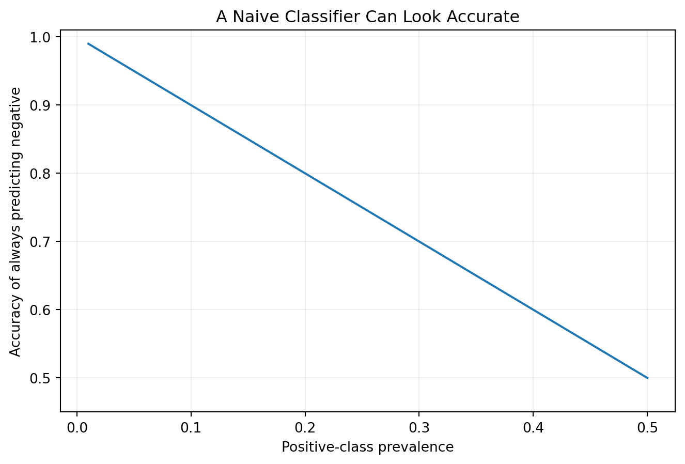

import numpy as np
y = np.array([0] * 90 + [1] * 10)
max(np.mean(y == 0), np.mean(y == 1))np.float64(0.9)By the end of this chapter, you should be able to:
A sophisticated algorithm cannot rescue a poorly framed problem.
Projects often begin too late: “Which model should we use?” A stronger project asks: What problem exists? What decision or knowledge need does it create? What exactly should be predicted, for whom, at what point in time, using which information, and how will success be judged?
Chapters 1–3 established what machine learning is, the Python environment in which we will work, and the mathematical and statistical ideas that support model reasoning. We now move from foundations to the first major workflow decision: translating a substantive question into a machine-learning problem that can be evaluated with appropriate data and evidence.
Compare:
“I want to use Random Forest to study student retention.”
with:
“At the end of a student’s second week, can we identify students at elevated risk of not returning the following term using only information available by that prediction time?”
The second formulation exposes unit, target, timing, horizon, information availability, intervention context, error costs, and generalization.
We will use
\[ \mathcal{P}=(U,Y,X_t,t,H,L,E,C), \]
where \(U\) is unit of analysis; \(Y\) the target; \(X_t\) information legitimately available at prediction time \(t\); \(H\) the horizon; \(L\) the loss/utility objective; \(E\) the evaluation design; and \(C\) constraints and context.
This is a pedagogical framework, not a universal mathematical law.
One row might represent a patient, student, university, transaction, document, institution-year, patient-visit, or student-course enrollment. Changing the unit can change the question.
Identify the defensible unit for:
“Student success” is not yet a target. Operationalizations might include next-term retention, six-year graduation, first-year credits earned, or course completion.
Many machine-learning problems begin with an idea that cannot be observed directly: learning, health need, engagement, readiness, quality, satisfaction, or resilience. This connects machine-learning design to the tradition of construct validity and to contemporary measurement modeling in computational systems (Cronbach and Meehl 1955; Jacobs and Wallach 2021).
A model cannot ingest a construct directly. The construct passes through operational decisions:
\[ \boxed{ \text{Construct} \rightarrow \text{Operational Definition} \rightarrow \text{Measurement} \rightarrow \text{Recorded Variable} \rightarrow \text{ML Target} } \]
Each arrow introduces assumptions.
If an education study wants to predict learning but uses final course grade, it implicitly proposes
\[ \text{Learning}\approx\text{Final Course Grade}. \]
Yet grades can also reflect assessment design, attendance policies, late penalties, prior preparation, revision opportunities, and instructor practices. The grade may still be useful; the question is whether it is defensible for the intended claim.
| Track | Construct | Possible proxy | Validity question |
|---|---|---|---|
| Health | health need | healthcare utilization | Does utilization also reflect access and care-seeking behavior? |
| Education | learning | final course grade | Does the grade combine learning with policy and opportunity? |
| Open ML | customer satisfaction | support contacts | Do contacts indicate dissatisfaction, engagement, complexity, or access? |
Let (C) denote the construct and (Y) the operational target. Strong prediction of (Y) does not establish
\[ Y=C. \]
Before fitting a model, ask:
For one proposed ML problem, identify: 1. the construct; 2. the operational definition; 3. the recorded target; 4. two other processes that could influence the target; 5. an alternative operationalization; 6. how conclusions might change under that alternative.
| Target form | Example | Typical task |
|---|---|---|
| continuous | systolic blood pressure | regression |
| binary | retained/not retained | classification |
| multiclass | diagnostic category | multiclass classification |
| count | emergency visits | count/regression |
| time-to-event | time until readmission | survival analysis |
| ordered category | risk level | ordinal modeling |
Let \(t\) be when a prediction is produced and \(H\) how far beyond \(t\) the outcome occurs.
\[ t=\text{end of Week 2}, \qquad H=\text{retention to next term}. \]
Would I actually know this value at the moment the model is supposed to make its prediction?
If not, it may create leakage. Leakage can produce systematically overoptimistic estimates of model performance and has become an important reproducibility concern in machine-learning-based science (Kapoor and Narayanan 2023).
Predicting course completion using prior GPA and first-week attendance may be legitimate. Using final course grade for an early-warning model is not.
A high predicted attrition risk does not identify which intervention will help. A health risk predictor does not prove that modifying an important feature will cause risk to fall.
Prediction concerns \(P(Y\mid X)\). Intervention requires different causal reasoning (Hernán and Robins 2020).
Prediction estimates unknown outcomes. Forecasting predicts future values with temporal structure. Classification estimates categories/probabilities. Ranking orders observations. Discovery characterizes structure. Explanation investigates relationships or mechanisms. Causal estimation asks what would happen under alternative interventions.
“Use computer vision” is not yet a machine-learning problem.
A vision workload can contain very different targets, units, outputs, and evaluation requirements:
| Vision task | Possible unit | Target/output | Example evaluation concern |
|---|---|---|---|
| image classification | image | class label | class imbalance and subgroup performance |
| object detection | image/object | class + bounding box | localization and detection quality |
| semantic segmentation | pixel/region | class per pixel | boundary quality and class imbalance |
| visual anomaly detection | image/region | anomaly score | rare-event validation |
| image retrieval | query-image pair | similarity/ranking | relevance and ranking quality |
A health study might classify a medical image, an education application might analyze handwritten work, and an Open ML experiment might classify benchmark images. The workload does not determine whether the study is scientifically valid.
The same framing questions still apply:
import numpy as np
y = np.array([0] * 90 + [1] * 10)
max(np.mean(y == 0), np.mean(y == 1))np.float64(0.9)Always predicting the majority class already achieves 90% accuracy here.
A predicted probability becomes an action only after a decision rule is applied. A default threshold such as 0.50 is not automatically appropriate.
A simple expected-cost representation is
\[ \text{Expected Cost}=C_{FP}P(FP)+C_{FN}P(FN). \]
This does not imply every consequence should be monetized. It makes explicit that errors can matter differently.
Evaluation may require random, stratified, grouped, temporal, geographic, or external validation. Random splitting can mislead when people repeat, institutions repeat across years, future prediction is the goal, or deployment occurs elsewhere.
Ask:
To whom, where, and when do we hope this model will generalize?
| Element | Question |
|---|---|
| Substantive problem | What real-world problem exists? |
| Stakeholder | Who needs the evidence? |
| Decision/use | What could happen because of the output? |
| Unit | What does one row represent? |
| Target | What exactly is predicted? |
| Construct | What broader phenomenon do we actually care about? |
| Operationalization | Why should this target represent that construct? |
| Proxy limitations | What does the target omit or confound? |
| Prediction time | When is prediction made? |
| Horizon | How far ahead is the outcome? |
| Available features | What is known then? |
| Baseline | What simple strategy must be beaten? |
| Error costs | Which mistakes matter? |
| Evaluation | How will generalization be tested? |
| Target population | To whom should results generalize? |
| Constraints | Privacy, fairness, latency, resources? |
| Intended use | What is the model designed to support? |
| Unsupported claims | What must not be concluded? |
Rather than “use NHANES to predict diabetes,” specify population, operational diabetes criterion, information available at the analytical time point, validation design, and intended claim.
Rather than “use IPEDS to predict retention,” specify institution-level unit, outcome period, prediction time, available prior-period features, and temporal validation.
Rather than “compare five classifiers on Wine,” specify a common evaluation protocol and a pedagogical question such as how scaling and model family affect out-of-sample performance.
import matplotlib.pyplot as plt
positive_prevalence = np.linspace(0.01, 0.50, 50)
majority_accuracy = 1 - positive_prevalence
plt.figure(figsize=(8, 5))
plt.plot(positive_prevalence, majority_accuracy)
plt.xlabel("Positive-class prevalence")
plt.ylabel("Accuracy of always predicting negative")
plt.title("A Naive Classifier Can Look Accurate")
plt.ylim(0.45, 1.01)
plt.grid(alpha=0.2)
plt.show()
A rare outcome can make a useless classifier appear impressive. Evaluation metrics must be chosen in context.
Responsible AI considerations belong in design, development, deployment, use, and evaluation (National Institute of Standards and Technology 2023). Consider legitimacy, problematic historical targets, sensitive proxies, uneven error consequences, over-trust, scope creep, and whether a simpler non-ML solution is preferable.
Prompt an AI assistant: “Build a machine-learning model to predict college student success.”
Audit whether it clarifies success, unit, prediction time, horizon, decision, population, feature availability, leakage, baseline, error costs, evaluation, ethics, and causal versus predictive claims. Rewrite the prompt so model selection cannot sensibly begin before framing is complete.
Choose one track—or a computer-vision workload within a track—and express it as
\[ \mathcal{P}=(U,Y,X_t,t,H,L,E,C). \]
Include substantive problem, stakeholder, unit, target, prediction time/horizon, feature-availability rules, leakage example, baseline, metrics, error costs, validation design, target population, constraints, and at least three unsupported claims. No model fitting is required.
Define the operational decision; specify target, timing, horizon, and information; identify leakage; choose baselines; align evaluation with deployment; reason about error costs; document intended use.
Additionally distinguish constructs from targets, define generalization populations, separate predictive from causal claims, justify evaluation as research design, and explain contribution beyond model comparison.
Transform a broad topic such as cardiovascular health, student retention, institutional outcomes, or classifier benchmarking into a substantive gap/decision problem, population, unit, target, timing, research question, evaluation design, contribution, and unsupported causal claim.
A useful predictive template is:
Among [population/unit], how well can [information available at time (t)] predict [target] over [horizon], and how well does performance generalize across [time/group/site/context]?
Use this to expose assumptions, not as a mandatory formula.
A university reports 95% dropout-prediction accuracy and recommends automatic mandatory interventions. Only 6% dropped out; final_term_status is in the data; repeated student records may cross a random split; no baseline is reported; 0.50 is used as the default threshold; error costs and subgroup performance are ignored; years are randomly mixed; and feature importance is called “causes.”
Critique accuracy, leakage, unit ambiguity, temporal validity, baseline, threshold, error costs, subgroup evaluation, causation, intervention logic, evaluation design, and the problem statement.
Version the substantive problem, stakeholder, intended use, unit, target, prediction time, horizon, feature-availability rule, exclusions, baseline, error assumptions, metrics, validation design, target population, constraints, and unsupported claims.
If framing changes, document what changed and why.